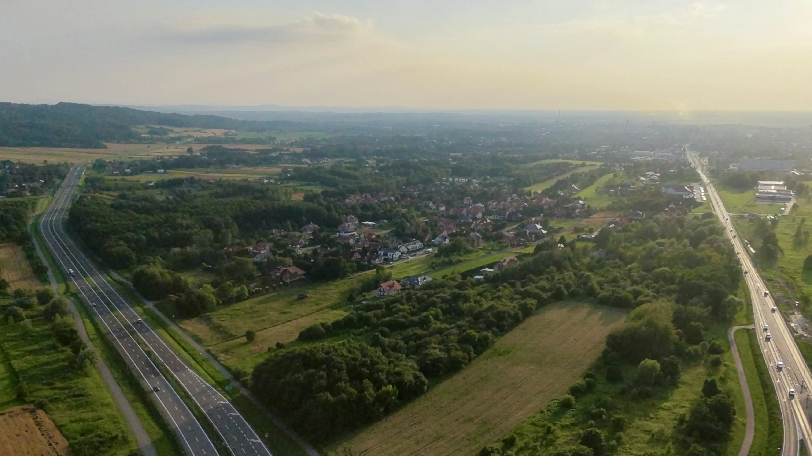
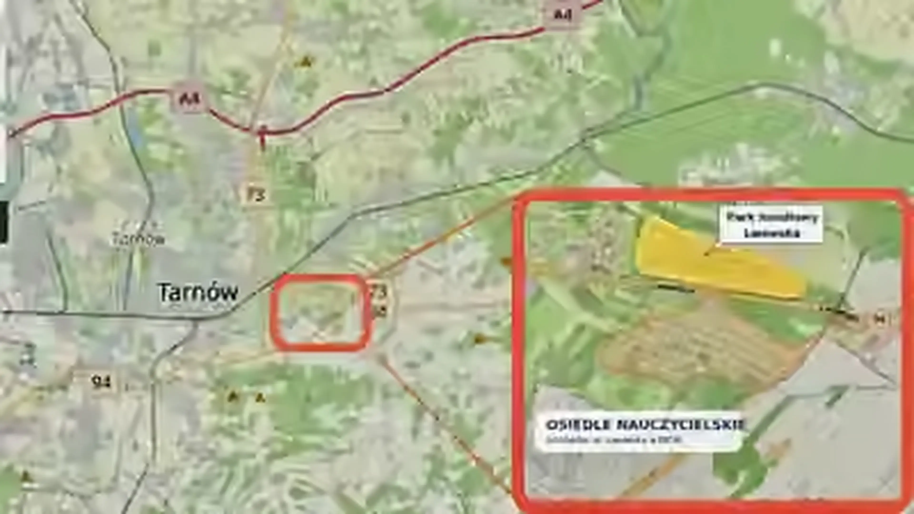

Uporządkowana historia oparta na dokumentach
Fakty są uporządkowane. Teraz potrzebny jest aktualny pomiar.
Sprawa zaczęła się w 2011 roku od pomiaru przy jednym z domów i propozycji konkretnego zabezpieczenia przy obwodnicy. W kolejnych latach Tarnów prowadził badania i tworzył mapy hałasu, ale nie wykonano nowego, reprezentatywnego pomiaru przy zabudowie Osiedla Nauczycielskiego.
Nie przesądzamy dzisiejszego wyniku ani gotowego rozwiązania. Pokazujemy, co wynika z dokumentów, czego nadal nie ustalono i jak można przejść do decyzji opartej na aktualnych danych.
Miejsce
Osiedle w klinie dwóch dróg krajowych
Po jednej stronie południowa obwodnica Tarnowa — droga krajowa nr 94. Po drugiej ul. Lwowska — część drogi krajowej nr 73. Pomiędzy nimi domy, ogrody i ulice Osiedla Nauczycielskiego. Takie położenie wymaga oceny obu źródeł hałasu osobno i łącznie.

Pierwszy ważny punkt
Pomiar przy domu przy ul. Sudeckiej 24
We wrześniu 2011 roku wykonano bezpośredni pomiar hałasu przy zabudowie mieszkalnej. Wynik wyniósł 63,4 dB w dzień i 61,5 dB w nocy.
W tamtym opracowaniu wynik porównano z wartościami dopuszczalnymi przyjętymi dla tego miejsca: 55 dB w dzień i 50 dB w nocy. To ważny punkt odniesienia i początek udokumentowanej historii sprawy.
Pomiar z 2011 roku jest wartościowym materiałem historycznym. Do oceny obecnej sytuacji potrzebne są jednak aktualne dane.
Kolejny etap
Dokumentacja przewidywała panel akustyczny przy obwodnicy
Opisano zabezpieczenie o długości około 296 metrów i wysokości około 5,5–6 metrów, mniej więcej na wysokości ulic Sudecka, Tatrzańska, Apenińska i Bieszczadzka.
W dostępnych materiałach nie znaleziono potwierdzenia, że panel wykonano w opisanym zakresie. Nie znaleziono również późniejszego pomiaru, który pozwalałby ocenić, jak sytuacja zmieniła się po tamtym opracowaniu.
Stan widocznego odcinka
Na pokazanym fragmencie nie ma panelu odpowiadającego opisanej propozycji
Zdjęcie pokazuje wyłącznie widoczny fragment drogi i nie zastępuje dokumentacji technicznej. Jest jednak czytelnym uzupełnieniem materiałów: na tym odcinku przy osiedlu takiego zabezpieczenia dziś nie widać.
Kolejne lata
Miejskie pomiary nie objęły zabudowy osiedla
W Tarnowie prowadzono pomiary i tworzono mapy hałasu. Z odnalezionych materiałów wynika jednak, że żaden z późniejszych punktów nie znajdował się przy domach na Osiedlu Nauczycielskim.
Te badania były potrzebne do oceny sytuacji w mieście. Nie dostarczyły jednak aktualnego wyniku dla zabudowy Osiedla Nauczycielskiego.
Odpowiedzi instytucji
Dotychczasowe stanowiska opierały się na mapach i wcześniejszych dokumentach
Każda z odpowiedzi wnosi element do historii sprawy. Żadna nie zawiera jednak raportu z nowego pomiaru wykonanego przy domach na osiedlu.
Miasto wskazuje potrzebę dokładniejszych badań
W odpowiedzi napisano, że sprawę powinny zbadać osoby i laboratorium posiadające odpowiedni sprzęt oraz uprawnienia. Nie znaleziono późniejszego raportu z takich badań na osiedlu.
GDDKiA przedstawia stanowisko na podstawie map i wcześniejszych materiałów
Nie przedstawiono nowego pomiaru wykonanego przy domach na osiedlu.
ZDiK analizuje sprawę na podstawie miejskiej mapy hałasu
W odpowiedzi nie pokazano raportu z aktualnego pomiaru przy zabudowie Osiedla Nauczycielskiego.
Dokumenty pozwalają dokładnie opisać historię sprawy. Do rozstrzygnięcia obecnej sytuacji potrzebny jest jednak lokalny pomiar przy domach.
Dlaczego sprawa wraca właśnie teraz?
Otoczenie osiedla wchodzi w kolejny etap zmian
Rozbudowa ul. Lwowskiej i uruchomienie Parku Handlowego Lwowska mogą zmienić liczbę samochodów, trasy przejazdu i godziny największego ruchu. Nie przesądzamy, jaki będzie efekt. Właśnie dlatego warto ustalić stan wyjściowy i później sprawdzić, co rzeczywiście się zmieniło.
Zmiana pierwsza
Rozbudowa ul. Lwowskiej
Po zakończeniu robót ruch może przebiegać inaczej niż wcześniej. Jego rzeczywisty wpływ powinien zostać oceniony na podstawie danych i pomiarów.
Zmiana druga
Park Handlowy Lwowska
Nowy obiekt może wpłynąć na ruch w okolicy, ale jego rzeczywisty wpływ będzie można ocenić dopiero po otwarciu i ustabilizowaniu się nowych tras przejazdu.
Cały układ w jednym miejscu
Osiedle, dwie drogi i planowany park handlowy
Mapa pomaga zrozumieć położenie osiedla i skalę zmian wokół niego. Nie jest mapą wyników hałasu i nie zastępuje pomiaru.

Najważniejszy wniosek
Nie przesądzamy dzisiejszego wyniku. Prosimy o jego rzetelne ustalenie.
Moc tej sprawy wynika z uporządkowanej dokumentacji, jasnej chronologii i precyzyjnego rozdzielenia faktów od założeń. Dzięki temu rozmowa może dotyczyć danych, odpowiedzialności i skutecznych działań — bez uprzedzania wyniku.
Rzetelność materiału
Co ta sprawa mówi — i czego uczciwie nie przesądza
- Nie przesądzamy, że prawne limity hałasu są dziś przekroczone.
- Nie twierdzimy, że miejska mapa hałasu jest błędna.
- Nie wskazujemy z góry jednego obowiązkowego rozwiązania.
- Nie sprzeciwiamy się rozbudowie ul. Lwowskiej ani Parkowi Handlowemu Lwowska.
- Nie przewidujemy z góry, jak zmieni się ruch.
- Oczekujemy decyzji opartej na aktualnych i lokalnych danych.
Dokumentacja
Materiały gotowe do rzeczowej rozmowy
Publiczna wersja petycji porządkuje historię, źródła i pytania wymagające odpowiedzi. Może służyć mieszkańcom, dziennikarzom, radnym, posłom i przedstawicielom instytucji jako wspólna, sprawdzalna podstawa rozmowy. Nie zawiera danych mieszkańców, podpisów ani prywatnej korespondencji.
Najczęstsze pytania
Najważniejsze odpowiedzi w skrócie
Czy strona twierdzi, że normy są dziś przekroczone?
Nie. Wynik z 2011 roku jest historyczny. Sednem sprawy jest potrzeba nowego pomiaru, który opisze obecną sytuację.
Dlaczego nie wystarczy miejska mapa hałasu?
Mapa pokazuje ogólny obraz miasta, ale nie oznacza, że hałas został zmierzony przy każdym domu. Nie zastępuje lokalnego pomiaru w kilku reprezentatywnych miejscach na osiedlu.
Czy mieszkańcy oczekują wyłącznie paneli akustycznych?
Nie. Panel z 2011 roku jest częścią historii sprawy. Dzisiejsze rozwiązanie powinno wynikać z aktualnych pomiarów i porównania dostępnych możliwości.
Dlaczego ten materiał jest wiarygodny?
Rozdziela fakty od przypuszczeń, wskazuje źródła, pokazuje luki w danych i nie przesądza wyniku przed wykonaniem badań.
Kontakt
Masz dokument, informację albo chcesz przyjrzeć się sprawie?
Zapraszamy mieszkańców, dziennikarzy, radnych i przedstawicieli instytucji.